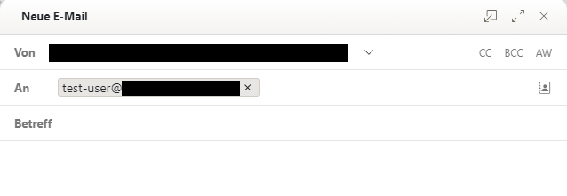
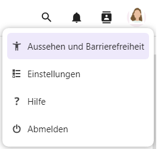

7 Office
Im Modul Produktivität wird ein umfangreiches Programm zum gemeinsamen Arbeiten an Dateien zur Verfügung gestellt.
Nutzerinnen und Nutzer erhalten die Möglichkeit, ihre Dateien an einem zentralen Ort abzuspeichern und mit weiteren Nutzerinnen und Nutzern zu teilen. Sowohl die Echtzeit-Zusammenarbeit mit mehreren Personen als auch die Einzelbearbeitung von Dokumenten wird unterstützt.
Über das Modul Produktivität rufen Sie Dateien auf. Sie können im Dateien-Speicher Ihre Dateien verwalten (erstellen, speichern, bearbeiten und löschen) und mit anderen Nutzerinnen und Nutzern teilen.
Im Dateien-Speicher können Sie Ordner , Textdateien , Dokumente , Tabellenkalkulationen , Präsentationen und Diagramme erstellen.
Zusätzlich können Dateien importiert und weiter bearbeitet werden. Es werden eine Vielzahl von Dateiformaten bei diesem Import unterstützt.
7.1 Neue Dateien schnell erstellen und speichern
7.1.1 Neue Dateien schnell erstellen
Die Schaltfläche Erstelle neue Dateien ist ein Schnellzugriff, um Dateien schnell zu erstellen, ohne zuvor in den Datenspeicher gehen zu müssen. Diese Schaltfläche finden Sie auf der Startseite unter Produktivität.
Nach Anklicken der Schaltfläche Erstelle neue Dateien öffnet sich ein Menü und Sie erhalten einen Überblick über die Untermodule Präsentation, Tabelle und Dokument. Wenn Sie mit dem Mauszeiger über die einzelnen Module fahren, werden Ihnen Felder zur Erklärung der Module angezeigt.
Der Schnellzugriff ermöglicht es, eine neue Datei zu erstellen, indem die entsprechende Schaltfläche angeklickt wird. Ein Dokument, eine Tabelle oder eine Präsentation wird in einem neuen Fenster geöffnet.
Hinweis: Von der Startseite aus können nur Dokumente, Präsentationen und Tabellen schnell erstellt werden. Wenn Sie einen anderen Dateityp wie z. B. ein Diagramm oder eine Textdatei erstellen möchten, muss dies im Datenspeicher geschehen, indem Sie auf das Plus-Symbol klicken. Dort können Sie den gewünschten Dateityp auswählen.
7.1.2 Dateien herunterladen und speichern
Um eine Datei herunterzuladen, navigieren Sie zunächst in den Ordner, in dem sich diese befindet. Klicken Sie rechts vom Dateinamen auf das Drei-Punkte-Menü und wählen Sie im Dropdown-Menü Herunterladen aus.
Sie können alternativ auch mehrere Dateien gleichzeitig auswählen und herunterladen, indem Sie links neben den Dateinamen die Kästchen der gewünschten Dateien auswählen und danach den oben beschriebenen Weg über das Dropdown-Menü gehen. Um alle Dateien im Ordner auszuwählen, klicken Sie das Kästchen ganz oben an.

Je nachdem, welchen Internetbrowser Sie verwenden, kann der nächste Schritt etwas unterschiedlich aussehen. Möglicherweise werden Sie direkt in einem neuen Fenster gefragt, wo Sie die Datei bzw. die Dateien speichern möchten (Beispielbild aus Mozilla Firefox). Navigieren Sie dann zu dem gewünschten Ordner auf Ihrem Computer.

In einem anderen Browser wie Microsoft Edge kann auch zunächst oben rechts ein Dialog erscheinen, der Ihnen Optionen zum Speichern bietet.

Klicken Sie in diesem Dialog auf Speichern , um die Datei sofort im Standardordner (meist der Ordner Downloads ) zu speichern. Alternativ können Sie mit Klick auf Speichern unter in einem neuen Fenster zum gewünschten Ordner navigieren. Wenn Sie Speichern unter gewählt haben, müssen Sie den Vorgang durch erneutes Speichern abschließen. Die Datei ist nun im gewünschten Ordner gespeichert.
7.2 E-Mail aus dem Produktivitäts-Modul versenden
Sie können über das Modul Produktivität auch E-Mails versenden. Klicken Sie dafür oben rechts neben Ihrem Profilbild auf das Personensymbol . Damit öffnen Sie eine Suchmaske und können nach Kontakten suchen, an die Sie eine E-Mail versenden möchten. Sobald Sie die gewünschte Person gefunden haben, klicken Sie auf ihren Namen.
Klicken Sie rechts neben dem Namen auf das Dreipunkt-Menü und wählen Sie die zweite Option aus. Es wird jetzt eine leere E-Mail an die von Ihnen erstellte Person erstellt. Vervollständigen Sie die E-Mail und klicken Sie wie gewohnt auf Senden.

Sie haben außerdem die Option mit einem von Ihnen ausgewählten Kontakt zu chatten. Klicken Sie dafür ebenfalls auf das Dreipunkt-Menü und wählen Sie die erste Option aus. Es öffnet sich daraufhin ein weiteres Fenster, in dem Sie chatten können.
7.3 Persönliche Benachrichtigungseinstellungen
Über Persönliche Benachrichtigungseinstellungen können Sie festlegen, zu welchen Aktivitäten Sie Mail- oder Push-Benachrichtigungen erhalten möchten. Klicken Sie hierzu zunächst oben rechts auf Ihr Profilbild und dann auf Einstellungen.

Sie gelangen auf eine neue Seite. Navigieren Sie nun im Menü links zum Punkt Benachrichtigungen.

7.3.1 Änderungen in Dateien
Es erfolgt eine Benachrichtigung, wenn Dateien geändert, geteilt oder heruntergeladen werden.
Sie können festlegen, ob Sie die Benachrichtigung als E-Mail oder Push-Nachricht erhalten möchten.
7.3.2 Änderungen in Kalender, Kontakte und Aufgaben
Es erfolgt eine Benachrichtigung, wenn ein Kalendertermin, eine Aufgabe, ein Kontakt oder ein Adressbucheintrag angelegt oder geändert wurde.
Sie können festlegen, ob Sie die Benachrichtigung als E-Mail oder Push-Nachricht erhalten möchten.
7.3.3 Andere Aktivitäten
Es erfolgt eine Benachrichtigung über geänderte Gruppenmitgliedschaften, Änderungen des eigenen Passworts oder der eigenen E-Mail-Adresse, Sicherheitsbelange, Kommentare für Dateien, Änderungen an System-Schlagwörtern einer Datei oder dem Fund von Viren.
7.3.4 Unbearbeitete Benachrichtigungen
Sie können oben auf der Seite wählen, ob und wie oft Sie E-Mail-Erinnerungen für unbearbeitete Benachrichtigungen erhalten möchten.
7.3.5 Tägliche Aktivitätsübersicht
Ganz unten auf der Seite können Sie aktivieren bzw. deaktivieren, dass Ihnen eine tägliche Aktivitätsübersicht gesendet wird.